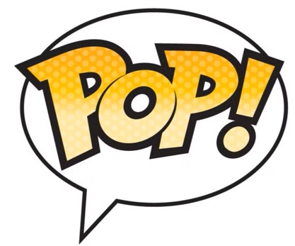
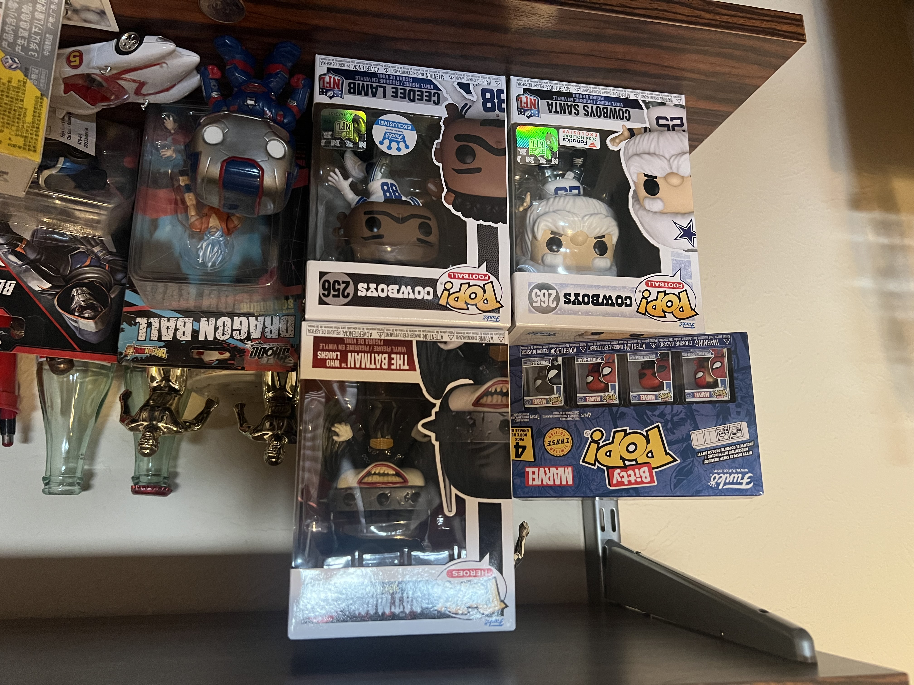
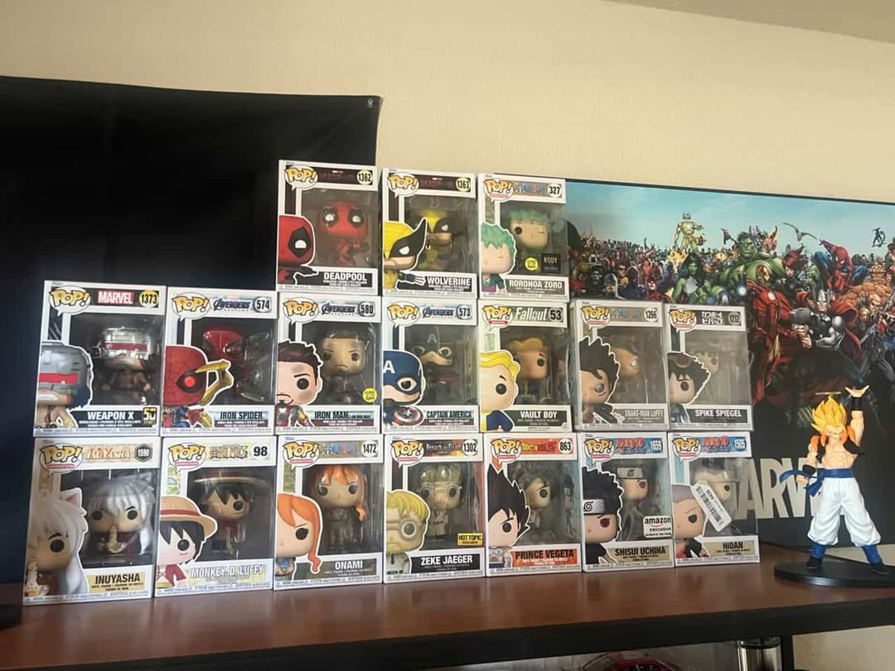
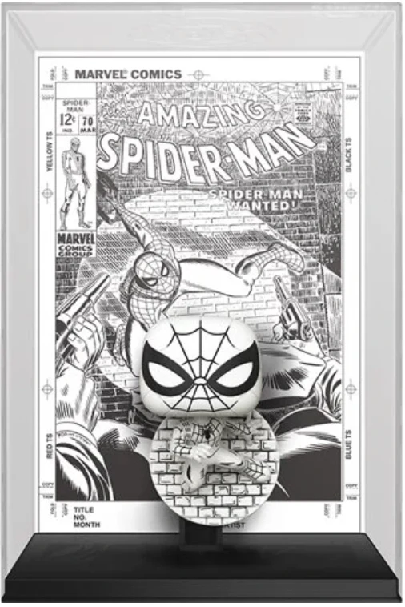
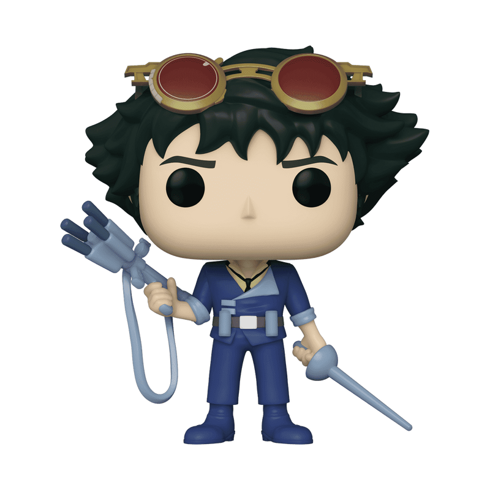
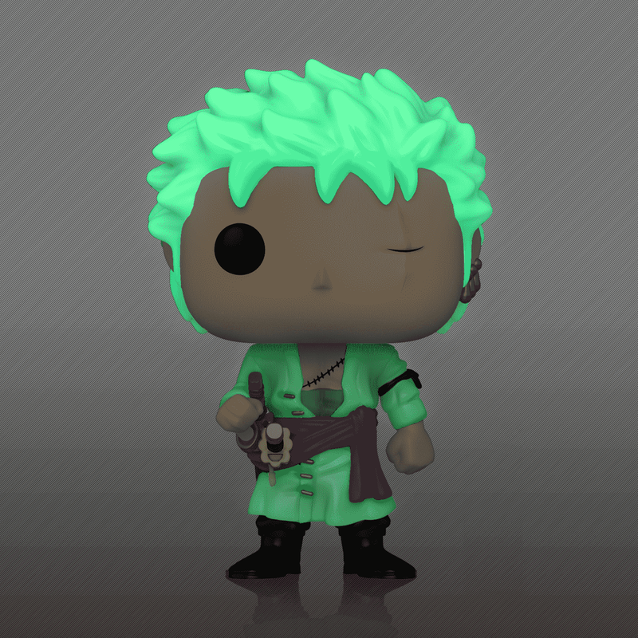
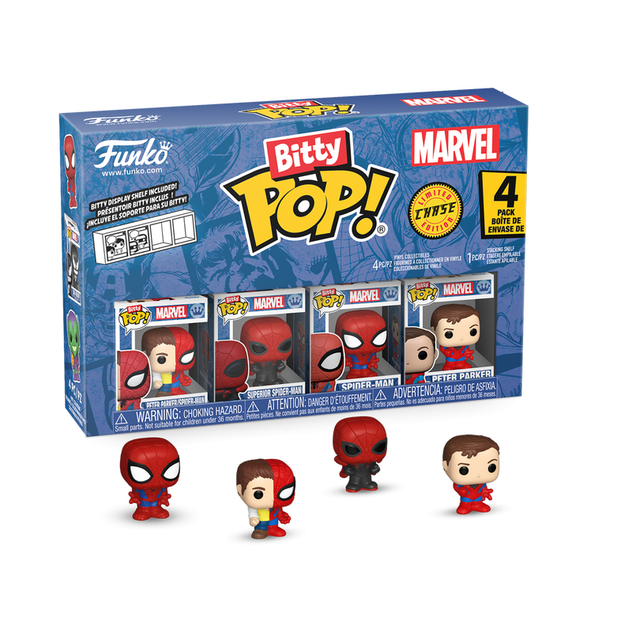

My Funko 
Collection
This display showcases my Funko Pop Collection, which has grown significantly over the past two years. Below are photos that include my main collection, an image of my extended collcetion, and some of my personal favorites. It's also given me the ability to express my passion for my favorite comic book heros, anime characters, and more.

My Extended Collection
Extended Collection | Funko Pops I keep at home
This is an extension to my original collection. These funkos are currently kept at my parents house while I'm away at college. My original collection sits on a shelf at my apartment in Lubbock, Texas. I'm a big Dallas Cowboys Fan and Ceedee Lamb is my favorite player which is why I have him and a Dallas Cowboys Santa. I'm also a fan of Marvel and DC which is where the Iron Patriot standing on the right, The Batman Who Laughs up top and the itty-bitty Spider-Man come from.

My Original Funko Collection
Collectibles| 2026
This photo is of my original funko collection that sits on a shelf at my apartment. It consists of distinct figures from my favorite animes, tv shows, comics, and video games. This is an earlier photo that covers a majority of what I have, but there are other photos featured on this page that will dive into the rest.

The Biggest Funko of my collection
Collectibles|large|Spider-Man
This is the largest funko of my collection. This one is a commerative Spider-Man that celebrates 85 Years of Marvel. As shown, it mimicks the Spider-Man comic cover in the background and comes in a signature black and white.

Favorite Figure in my collection
Collectibles|Anime|See you Space Cowboy...
This figure is my personal favorite, considering Cowboy Bebop is one of my favorite animes of all time. This edition of Spike I found online from a third party source but when it arrived, it came in a strong protective box and has never been opened. I'm also confident this specific Spike Spiegel will also become of more value many years from now.

Coolest Figure in my Collection
Collectibles|Anime|One Piece
The coolest figure I think that's part of my collection is this Roronoa Zoro exclusive. I picked this one up from Dream Con last summer in Houston. The cool part about this figure is that his hair is able to glow in the dark. I usually dont pick up funkos from conventions because they can be pricey, but it was nice to find this one at a good price.

Smallest Figure(s) in My Collection
Collectibles|Tiny|Spider-Man
The Smallest of my funko collection are these Bitty Pop Spider-Man I was given as a gift. They're limited edition and they come with 4 tiny variants of Spider-Man. There's also another version that can be found that consists of 4 more variants.